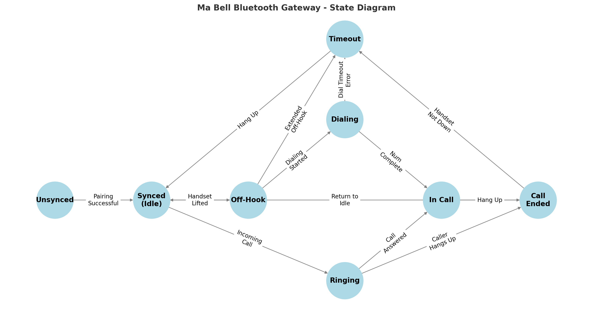

Firmware State Machine
The Ma Bell Gateway firmware is organized around a deterministic state machine that governs the behavior of the system in response to physical events, dialing inputs, and Bluetooth call signaling. These states span power-on initialization, Bluetooth synchronization, and the complete lifecycle of both inbound and outbound calls.
The diagram below presents the complete high-level state model. It serves as a conceptual reference for understanding how the system behaves during startup, idle periods, dialing sequences, and live call handling.
{kind=link}
The firmware’s behavioral logic can be grouped into three primary categories of state transitions:
Bluetooth Synchronization – Managing the link to a paired mobile device.
Inbound Call Flow – Responding to incoming calls with appropriate ringing and answer handling.
Outbound Call Flow – Handling dialing, tone generation, and call initiation from a rotary or DTMF-capable phone.
These categories define the major operating modes of the device and form the foundation for how user input, hardware signals, and Bluetooth events translate into real-world telephone behavior.
Bluetooth Synchronization States
Before calls can be made or received, the firmware must establish a connection with a previously paired mobile device. The following table outlines the current and planned Bluetooth sync behavior:
From State |
To State |
Triggering Event |
|---|---|---|
Startup |
Unsynced |
Firmware powered on; no active Bluetooth link |
Unsynced |
Searching |
(Future) Auto-reconnect logic initiated |
Searching |
Synced |
Target device found and Bluetooth connection established |
Unsynced |
Synced |
Manual pairing completed |
Synced |
Unsynced |
Bluetooth disconnected or device goes out of range |
Note
In the current firmware, pairing must be initiated manually. Future updates will introduce auto-resync behavior by scanning for the most recently paired device when unsynced.
Call Flow
Once Bluetooth is synced, the system is ready to handle calls. The call flow state machine branches depending on whether a call is inbound or outbound.
Inbound Call Flow
Inbound calls are triggered externally by the mobile device and require minimal user interaction—typically just lifting the handset to answer.
From State |
To State |
Triggering Event |
|---|---|---|
Synced (Idle) |
Ringing |
Incoming call detected over Bluetooth |
Ringing |
Connected |
Handset lifted during ring |
Ringing |
Idle |
Call dismissed or timed out |
Connected |
Call Ended |
Remote party ends call or handset placed down |
Call Ended |
Idle |
Cleanup complete, call teardown finished |
Outbound Call Flow
Outbound calls involve multiple stages: detecting off-hook, collecting a number (via pulse or tone), placing the call, and handling the connection.
From State |
To State |
Triggering Event |
|---|---|---|
Synced (Idle) |
Off Hook |
Handset lifted |
Off Hook |
Dial Tone |
Line seized, dial tone initiated |
Dial Tone |
Dialing |
First digit detected |
Dialing |
Dialing |
More digits received |
Dialing |
Call Initiated |
Final digit completes valid number |
Call Initiated |
Ringback |
Call initiated, awaiting answer |
Ringback |
Connected |
Remote party answers |
Connected |
Call Ended |
Handset placed down or remote hangs up |
Call Ended |
Idle |
Return to ready state |
Design Notes
All transitions are driven by either physical actions (e.g., handset lifted), signal detections (e.g., rotary pulse or DTMF), or Bluetooth events (e.g., ESP_HF_CLIENT_AUDIO_STATE_EVT).
Timeouts and error recovery paths always return the firmware to a stable Idle or Unsynced state.
Ringing simulation, tone playback, and voice routing are dynamically enabled or disabled based on the current state.
This model enables the firmware to behave like an authentic analog phone, while ensuring robustness when integrating with modern mobile devices.